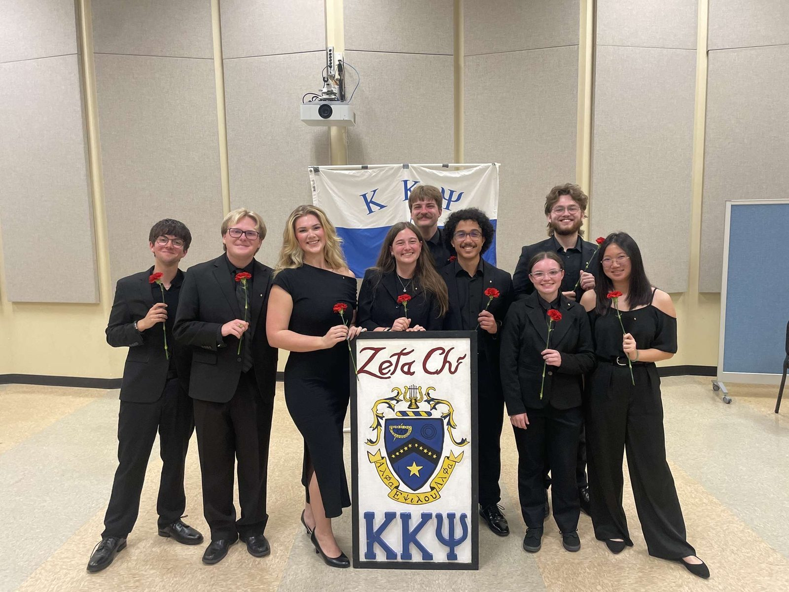
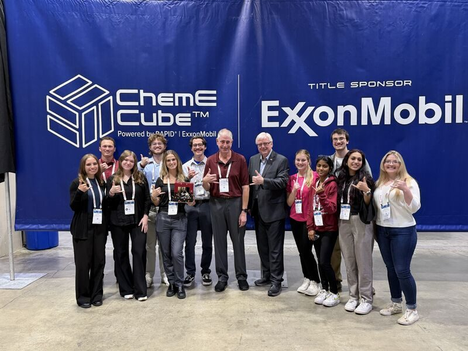
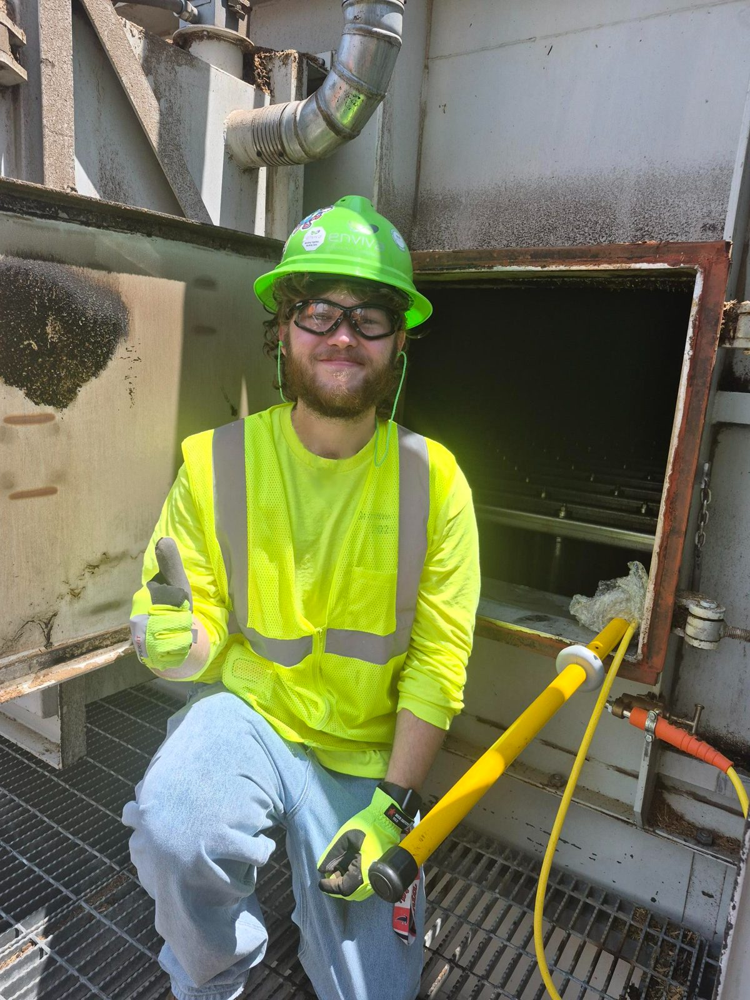
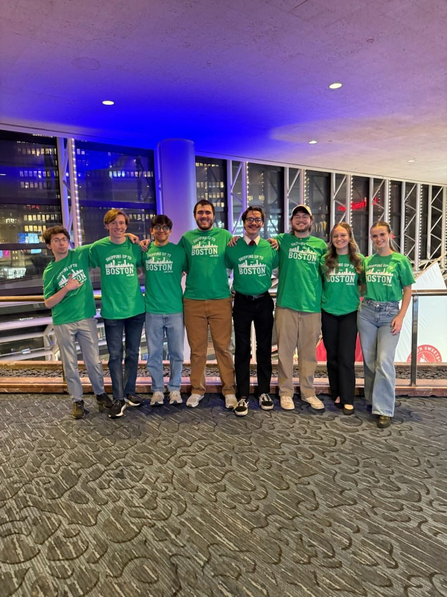

Dylan “Mike” Kennedy.
Pathway of Distinction: Professional and Civic Engagement

"Winning is not everything, but making the effort to win is." - Vince Lombardi
I'm a Chemical Engineering student in the Honors College at the University of South Carolina, graduating with Leadership Distinction through the Professional and Civic Engagement pathway. My time at Carolina has been shaped by learning to move between two worlds that don't always speak the same language: the technical and the human, the classroom and the workplace, policy and people. That shows up in everything from pitching a Direct Air Capture project to investors one week, to translating a plant-floor chemistry fix into a $150,000 annual savings case the next. This portfolio walks through three key insights that trace that theme: translating engineering work across audiences, justifying technical decisions in financial and human terms, and holding institutional authority while protecting someone else's agency. It closes with how I plan to apply these lessons to a real, ongoing problem in my field. After graduation, I plan to build a career in sustainable energy system design, applying the same discipline of translating technical work into terms that drive real adoption.

Also, I'm an active brother in Kappa Kappa Psi, the national honorary band fraternity, where I've supported the university band program through service projects and mentoring new members. It may not one of the three formal Key Insights, but it's shaped how I think about earning trust and influence as a leader.
Key Insights
Three moments where a within-the-classroom (WTC) concept and a beyond-the-classroom (BTC) experience informed one another.

Our Vitamin Cube team after the pitch at the AIChE Annual Student Conference, ExxonMobil-sponsored ChemE Cube competition — the presentation that placed 2nd internationally.
In SPCH 140, I studied how effective communication depends on adapting the same underlying message to fit the expectations, priorities, and vocabulary of a specific audience — what the course framed as [confirm your course's exact term/model, e.g. audience analysis or the rhetorical triangle]. At the time, this felt like a useful but somewhat abstract communication skill for structuring a speech.
That concept became concrete during the AIChE Annual Student Conference, where I represented two different project teams in the same week. On the Vitamin Cube presentation team, I helped research a novel chemical additive for a Solid Direct Air Capture (S-DAC) system — pyrolyzed mandarin peels treated with KOH, which successfully captured 6 wt.% CO2 — then pitched the business model and process scale-up strategy to a panel of industry judges acting as investors. In the ChemE Car competition, I presented a technical poster explaining our car's design and performance to a different panel of judges. The underlying engineering work was rigorous in both cases, but the audiences needed almost opposite things from me — the investor panel wanted a business case, not a derivation; the technical judges wanted rigor, not a sales pitch.
Preparing both presentations in the same week forced me to actually practice what SPCH 140 had only let me theorize: the same body of knowledge has to be reframed, not just restated, depending on who's evaluating it. The Vitamin Cube pitch placed 2nd internationally, which told me the reframing had worked under real scrutiny.
This taught me that technical competence and persuasive communication are two separate skills that most engineering coursework treats as one. Going forward, I plan to treat "who is this for" as a first step in any technical communication I do professionally.
- WTC — graded speech/assignment from SPCH 140 demonstrating audience analysis
- BTC — Vitamin Cube investor pitch deck and ChemE Car poster, captioned to show the shift in framing

On site at the WESP unit at Enviva Biomass's Greenwood, SC facility, where I developed and scoped the chemical additive discussed above.
ECHE-573 examines the transition from a fossil-fuel-based energy economy to a sustainable one not as a purely technical problem, but as one that has to be weighed simultaneously against economic, political, and social factors. The course's core framework is that a technically correct engineering decision isn't automatically the right decision — it has to hold up when evaluated through multiple, often competing, lenses at once.
I encountered this directly during my internship at Enviva Biomass, where I developed and scoped a chemical additive designed to eliminate Wet Electrostatic Precipitator (WESP) cleaning requirements — reviewing Piping and Instrumentation Diagrams and real-time plant data, and applying Root Cause Analysis to troubleshoot the problem while staying within Process Safety Management standards. The technical fix itself was only half the job — making the case for it required translating the chemistry into terms that mattered to the plant: the additive is projected to save the company over $150,000 annually and meaningfully reduce the water and labor otherwise spent on manual WESP cleaning.
[Tie this to a specific concept/case study from ECHE-573 once the course is underway — e.g., a case study on renewable infeasibility due to cost rather than technology.] My Enviva project was a small-scale version of the same reasoning the course applies at an industry level: a technically sound solution still has to be argued for in financial and operational terms before it becomes a real solution.
Going forward, this changes how I evaluate my own engineering work — I now build the cost and environmental case alongside the technical one, because that's what actually determines whether good engineering gets adopted.
- WTC — project or case study response from ECHE-573 (pending Spring 2026 completion — confirm before submission)
- BTC — redacted data/chart showing before-and-after results of the flush system change
SCHC 354 examined how individuals author their own identity through life narrative, often while navigating external structures they didn't choose — family expectations, cultural systems, institutions. Melba Pattillo Beals's Warriors Don't Cry follows a teenager asserting her own dignity and identity inside a segregated institutional system that was actively working against her; Tara Westover's Educated follows someone authoring a self entirely outside the narrative her family had written for her. The throughline across the course was that people are not fully defined by the systems around them — they retain agency in how they interpret and narrate their own experience, even inside rigid or hostile structures.
As a Resident Assistant, I occupy a version of that structure for 28 residents. I'm responsible for enforcing university policy, documenting incidents, and resolving conflicts — real institutional authority with real accountability. But I'm also the person residents come to with academic and personal struggles, often in the same conversation where I'm also holding a policy line.
SCHC 354 changed how I think about that dual role. One of the clearest examples came during an on-duty emergency where a resident reported feeling unsafe because of another occupant's behavior in her building, which escalated to a serious safety concern requiring immediate law enforcement involvement. In the moment, I had to shift fully into an enforcement role — following emergency protocol, coordinating with police, and prioritizing the safety of everyone in the building. But the resident who reported it was frightened, and my job in that same conversation was to make sure she didn't feel like a footnote in a police report — that her experience was acknowledged as more than just the trigger for a procedure. Rather than treating conflict resolution as simply "apply the rule," I started approaching it the way Beals and Westover approached their own institutional conflicts: the goal isn't to erase the structure, it's to help the person retain their own voice and agency within it.
This is a framework I expect to carry into any future role that involves both authority and mentorship — the two aren't in conflict, but they do require deliberately protecting the second while exercising the first.
- WTC — paper, journal entry, or reflection from SCHC 354 on identity vs. institutional structure
- BTC — RA performance review or redacted incident reflection (all resident info removed)
Leadership Plan
How I plan to apply my key insights to a real, ongoing issue in sustainable energy system design.
The Issue
Wet Electrostatic Precipitator (WESP) cleaning at biomass processing plants like Enviva's Greenwood facility, where I completed my internship, consumes significant water, labor, and chemical resources — and until my internship project, that cost was treated as a fixed operating expense rather than a solvable engineering problem. I developed and scoped a chemical additive that eliminates the need for WESP cleaning entirely, projected to save the facility over $150,000 annually. But that solution currently exists at a single plant. Enviva operates several other facilities with comparable WESP systems, and the fix has not yet been evaluated, funded, or adopted beyond Greenwood. Narrowing "sustainable biomass processing" down to this one specific, already-proven process improvement is what makes this a realistic, addressable initiative rather than an abstract goal.
Recommendations / Solutions

The AIChE executive team I helped lead as Vice President [EDIT: confirm the event/conference this was taken at], whose sponsorship and fundraising work funds the competition teams behind Key Insight #1.
I recommend formally documenting the WESP additive as a standardized process improvement and building the case needed to pilot it at a second Enviva facility. This draws directly on Key Insight #2: a technically sound fix doesn't get adopted on technical merit alone — it needs a financial and operational case built around it, the same translation I did when I paired the chemistry with the P&ID review, real-time data, and Root Cause Analysis that justified it the first time. It also draws on Key Insight #1: plant operations staff and corporate sustainability stakeholders will need the same underlying case framed differently — operations will care about downtime and labor, sustainability leadership will care about water reduction and emissions reporting — the same audience-translation skill I practiced pitching Vitamin Cube to investors versus judging panels.
I also intend to draw on my experience as Vice President of AIChE, where I secured over $5,000 in funding and sponsorships for our competition teams. That role taught me what it actually takes to get an organization to say yes to a resource request — building relationships with the people who control budget, and presenting a clear, credible ask rather than just a good idea. Scaling the WESP fix to a second plant is the same kind of ask, at a larger scale.
Detailed Plan
| Step | How | Why |
|---|---|---|
| 1. Formalize the documentation | Write up the WESP additive project as a standardized process change, including the P&ID review, chemistry, and cost/water-savings data already gathered. | A one-off internship success has to become a repeatable, transferable process before anyone else can adopt it. |
| 2. Identify a pilot facility | Work with my Enviva supervisor to identify a second plant with a comparable WESP configuration. | The fix needs to be validated somewhere other than the original site before it can be trusted as a general solution. |
| 3. Build two versions of the pitch | Create an operations-focused case (labor, downtime, safety) and a sustainability-focused case (water use, emissions) from the same underlying data. | Different stakeholders approve budget for different reasons — Key Insight #1 in practice. |
| 4. Secure pilot funding | Present the case to plant leadership, using the stakeholder-relationship and ask-framing skills I built securing AIChE sponsorships. | Even a proven fix needs someone to approve the budget and time to test it elsewhere. |
| 5. Implement and monitor | Work with the second plant's engineers to implement the additive and track cleaning frequency, chemical cost, and water use over a defined period (e.g., 3–6 months). | Comparable, measured results are what would justify a company-wide rollout. |
Evaluation
Success would look like the second plant achieving a meaningful share of the original site's savings — I'd set an initial bar of at least 70% of the original cost and water reduction, since plant-specific variables (water chemistry, equipment age, throughput) may affect results. Input would come from the pilot plant's engineers and operations staff, who are best positioned to flag anything that doesn't transfer cleanly from the original site. The data I'd track is the same data that made the first case credible: cleaning frequency, chemical cost, and water consumption, compared before and after. What I hope to learn is whether this specific fix generalizes across Enviva's plants — and more broadly, how to take a single successful engineering improvement and turn it into an organizational standard, which is the exact skill sustainable energy system design requires at scale.
Selected Projects
Work from the classroom, competitions, and internships that I'm proud to share beyond the three formal Key Insights above.
Vitamin Cube — Solid Direct Air Capture
Researched a novel S-DAC additive — pyrolyzed mandarin peels treated with KOH — that captured 6 wt.% CO2, then pitched the process and business case to a panel of investor-judges at the AIChE Annual Student Conference. Placed 2nd internationally.
WESP Cleaning Elimination
Developed and scoped a chemical additive that eliminates the need for wet electrostatic precipitator cleaning at a biomass processing plant, projected to save the facility over $150,000 annually. Built on P&ID review, real-time data, and root cause analysis.
ChemE Car Competition
Presented a technical poster on our car's chemically-powered propulsion and stopping mechanism to a judging panel of practicing engineers, the same week as the Vitamin Cube investor pitch — two audiences, one body of work.
[EDIT: add another project you're proud of]
Swap this card for anything else you want to showcase — a class project, a personal build, research, or something from a future internship. Keep the same structure: a short context line, 2–3 sentences on what it was and why it mattered, and a couple of tags.
Let's Talk
leadership roles
mentorship conversations
collaboration
Response time
within 48 hours